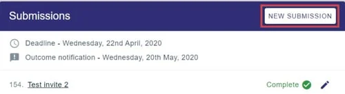

Making a second/additional submission
SubmittingLast reviewed 28 July 2026
If the event settings allow, you can make additional submissions to the same event, if you require.#
NB: The guidance below is for users who are submitting to a conference. If you are the administrator of an event please see The submission stage.
To make a new submission to a conference you've already submitted to, click on New Submission in your personal dashboard.

To make a submission to a new conference that you haven't yet submitted to, follow the link in the conference website or email or contact the Event Administrator.
See also Making a submission and Editing a submission.
Did this page solve it?
Thanks — this helps us fix it.